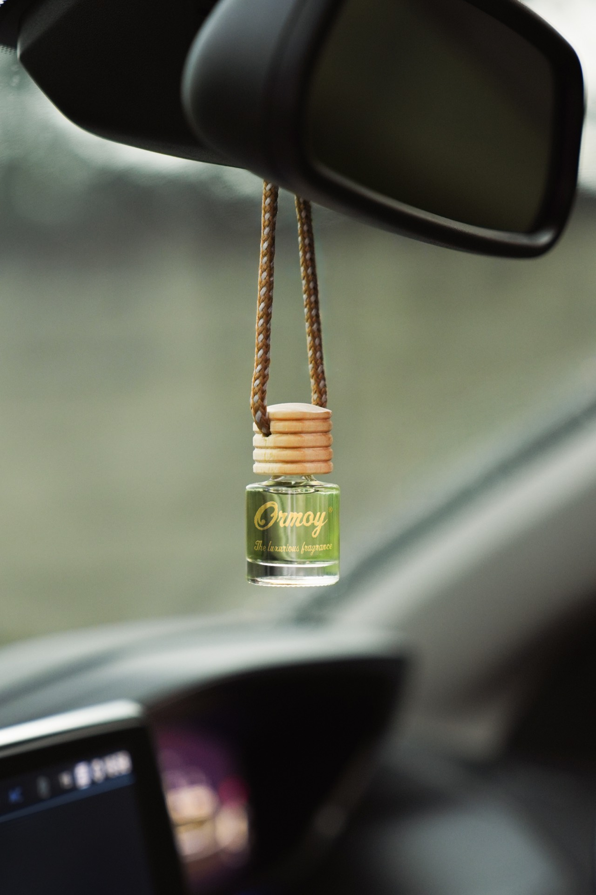
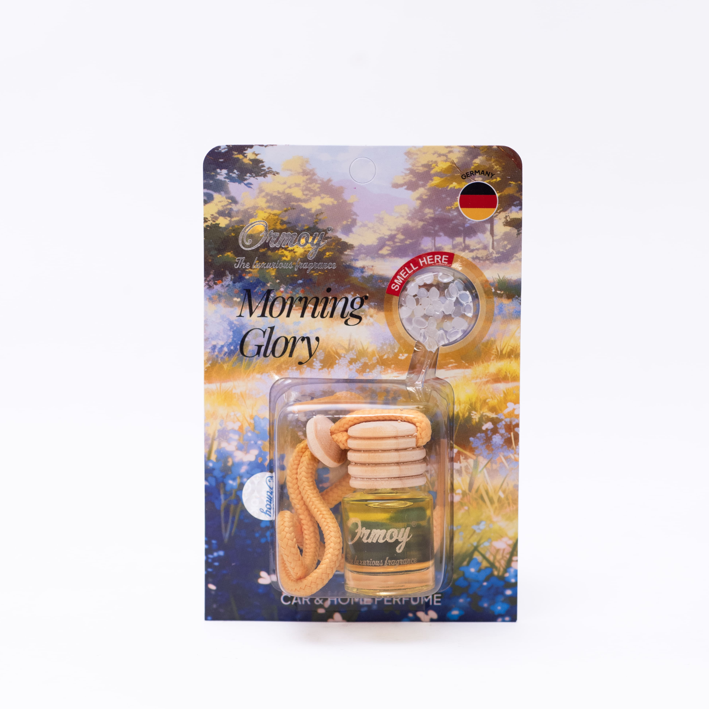

22 Mei 2026
Parfum Mobil Tidak Bikin Pusing: Panduan Memilih yang Aman
Kenapa parfum mobil bisa bikin pusing dan mual? Panduan memilih parfum kabin yang aman — berdasarkan bahan, teknologi, dan kondisi kabin.
Baca Selengkapnya →
Daftar Isi
Antar anak ke sekolah pagi hari. Jemput istri yang sedang hamil besar dari kontrol kandungan. Road trip ke rumah mertua di akhir pekan. Mobil keluarga bukan sekadar alat transportasi — ini ruang tertutup di mana orang-orang paling kamu sayangi menghabiskan banyak waktu.
Dan di ruang sekecil itu, aroma punya pengaruh yang jauh lebih besar dari yang kita sadari. Parfum mobil yang salah bisa jadi alasan anakmu mabuk perjalanan. Bisa jadi penyebab istrimu yang sedang hamil tiba-tiba mual padahal tidak merasakan apa-apa di rumah. Bisa jadi alasan si kecil menolak masuk mobil setelah pulang sekolah.
Artikel ini bicara soal cara memilih parfum mobil yang cocok untuk kabin keluarga — apa yang harus dicari, apa yang harus dihindari, dan varian mana yang paling ramah untuk anak kecil dan ibu hamil.
Pernah masuk ke mobil yang baru dipasang parfum murah dan langsung merasa kepalamu berat? Itu bukan kebetulan. Ada tiga alasan kenapa parfum mobil biasa sering jadi sumber masalah di kabin keluarga.
Banyak parfum mobil murah pakai konsentrasi fragrance yang terlalu pekat karena mengejar efek "langsung wangi" di hari pertama. Di ruang terbuka ini mungkin tidak masalah, tapi kabin mobil adalah ruang tertutup sekitar 3 meter kubik. Aroma yang di ruang tamu terasa pas, di kabin bisa menyengat sampai memicu pusing.
Parfum mobil berkualitas pakai sistem slow-release — aroma dilepas secara bertahap dan konsisten. Parfum murah melepaskan hampir semua aroma dalam 3-5 hari pertama, lalu nyaris hilang. Masalahnya di hari-hari pertama itu intensitasnya bisa terlalu tinggi, terutama untuk indera penciuman anak kecil yang masih sensitif.
Bahan baku fragrance berkualitas rendah sering mengandung senyawa VOC (volatile organic compound) yang pada konsentrasi tinggi bisa memicu iritasi hidung, tenggorokan, dan sakit kepala. Ini bukan masalah teoretis — banyak keluhan "parfum mobil bikin pusing" berakar di sini.
Untuk pembahasan lebih lengkap soal kenapa parfum mobil bisa bikin pusing, kami sudah bahas di artikel ini.
Tidak semua parfum mobil cocok untuk kabin keluarga. Ini lima ciri yang perlu kamu cari sebelum memutuskan membeli.
Parfum mobil yang baik untuk keluarga tidak berusaha membuat kabin "sangat wangi" di hari pertama. Intensitasnya dirancang untuk terasa hadir — tapi tidak mendominasi. Ini penting karena indera penciuman anak kecil dan ibu hamil (terutama di trimester pertama) jauh lebih sensitif dibanding orang dewasa pada umumnya.
Pastikan parfum menggunakan sistem pelepasan bertahap. Aroma yang dilepas sedikit demi sedikit setiap hari jauh lebih nyaman dibanding ledakan aroma di awal yang kemudian memudar cepat.
Aroma dengan karakter woody hangat, floral ringan, atau fresh fruity lembut biasanya lebih ramah untuk kabin keluarga. Aroma tajam seperti kopi pekat, mint ekstrim, atau musk berat bisa terlalu overwhelming untuk anak kecil.
Brand yang serius dengan kualitas tidak keberatan menjelaskan bahan baku dan proses produksinya. Hindari parfum mobil tanpa informasi jelas soal produsen, komposisi umum, dan standar mutunya.
Sertifikat halal, nomor registrasi merek, dan jaminan mutu adalah indikator bahwa produk sudah melewati standar tertentu. Untuk produk yang masuk ke kabin keluarga setiap hari, ini bukan detail yang bisa diabaikan.
ORMOY sudah beroperasi sejak 2012 dan mendistribusikan jutaan botol ke pengemudi di seluruh Indonesia — termasuk banyak keluarga dengan anak kecil dan ibu hamil. Dari 21 varian yang tersedia, enam ini yang paling sering dipilih untuk mobil keluarga karena karakter aromanya yang lembut dan intensitasnya yang terkalibrasi.
Floral yang lembut dengan sentuhan segar seperti embun pagi. Morning Glory adalah salah satu varian yang paling sering direkomendasikan untuk kabin yang membawa anak kecil atau ibu hamil. Aromanya hadir tanpa berusaha mencuri perhatian — persis yang kamu butuhkan untuk perjalanan sekolah pagi atau kontrol kandungan.
Karakternya bersih seperti seprai yang baru dicuci — netral, segar, dan sulit membuat orang kecewa. Air Freshco cocok untuk kamu yang ingin kabin terasa "fresh" tanpa ada karakter aroma yang spesifik. Pilihan yang aman kalau selera penumpang di keluargamu beragam.
Perpaduan aroma tropis ringan yang mengingatkan pada sore hari di pantai. Tidak terlalu manis, tidak terlalu segar — ada di tengah-tengah. Summer Breeze bagus untuk perjalanan jauh karena karakternya yang tidak membosankan dan tidak melelahkan indera.
Floral dengan sentuhan manis yang halus. Cherry Blossom disukai banyak orang karena karakternya yang menyenangkan tanpa pernah terasa berlebihan. Pilihan yang disambut baik oleh anak-anak maupun orang dewasa.
Madu segar di atas kayu hangat. Honey Wood adalah hero product dari koleksi SIGNATURE ORMOY. Walau karakternya lebih "dalam" dibanding floral ringan, intensitasnya tetap terkalibrasi sehingga tidak overwhelming. Cocok untuk keluarga yang ingin karakter aroma yang lebih elegan tanpa mengorbankan kenyamanan.
Baca review lengkapnya di artikel review Honey Wood.
Perpaduan buah tropis yang segar dan ceria. Tropical Island membuat kabin terasa seperti liburan — cocok untuk perjalanan akhir pekan bersama keluarga. Karakternya bersahabat, tidak terlalu berat, dan sering jadi favorit anak-anak.
Catatan: Untuk kabin yang membawa bayi di bawah 1 tahun atau ibu hamil di trimester pertama, mulai dari varian paling ringan seperti Morning Glory atau Air Freshco. Amati reaksi di beberapa perjalanan pertama sebelum menyesuaikan.
Penempatan parfum mobil bukan hal sepele kalau ada car seat di kabin. Berikut tiga hal yang perlu diperhatikan.
Udara dari ventilasi membawa aroma langsung ke arah yang dituju. Kalau parfum terpasang di ventilasi yang mengarah ke car seat, bayi akan menerima konsentrasi aroma tertinggi di seluruh kabin. Idealnya tempatkan parfum di ventilasi yang mengarah ke pengemudi atau di area belakang headrest kursi depan.
Paparan sinar matahari langsung mempercepat penguapan aroma dan bisa mengubah karakter wanginya. Dashboard yang terkena matahari dari kaca depan bukan tempat ideal. Area di belakang kaca spion tengah atau di balik headrest biasanya lebih stabil.
Walau kamu pakai parfum mobil yang aman, pastikan sirkulasi udara di kabin tetap baik. Buka sedikit jendela saat pertama masuk mobil yang sudah diparkir berjam-jam, atau nyalakan AC dengan mode fresh air sebelum anak masuk. Ini mengurangi akumulasi aroma yang mungkin terasa terlalu pekat di awal.
Untuk banyak keluarga Indonesia, sertifikat halal bukan sekadar formalitas. Ini jaminan bahwa bahan baku dan proses produksi memenuhi standar yang bisa dipercaya untuk produk yang masuk ke ruang kabin sehari-hari — ruang di mana anak-anak dan keluarga menghabiskan banyak waktu.
ORMOY telah tersertifikasi Halal oleh BPJPH (Badan Penyelenggara Jaminan Produk Halal) sejak Oktober 2026. Sertifikat ini bisa diverifikasi langsung di database publik BPJPH.
Ditambah dengan status brand yang sudah terdaftar di DJKI dan beroperasi sejak 2012 — ada rekam jejak yang bisa diperiksa, bukan janji kosong.
Kabin mobil keluargamu adalah ruang kecil tempat orang-orang paling kamu sayangi menghabiskan waktu bersama setiap hari. Memilih parfum yang tepat bukan soal bikin kabin "paling wangi" — ini soal menciptakan ruang yang nyaman untuk semua yang ada di dalamnya.
Kalau ini pertama kali kamu memilih parfum mobil untuk kabin keluarga, mulai dari pilihan paling ringan seperti Morning Glory atau Air Freshco. Perhatikan reaksi anak dan pasanganmu dalam beberapa perjalanan pertama. Dari situ kamu bisa menyesuaikan — mencoba karakter yang lebih berani seperti Honey Wood, atau tetap di pilihan lembut yang sudah cocok.
Yang penting kabinmu terasa seperti ruang yang mereka inginkan untuk ditempati, bukan ruang yang perlu mereka biasakan.
Parfum mobil yang diformulasikan dengan bahan grade kosmetik dan sistem pelepasan aroma yang terkontrol umumnya aman. Yang perlu dihindari adalah parfum mobil murah dengan konsentrasi aroma sintetis tinggi yang bisa memicu mual — terutama di trimester pertama saat sensitivitas aroma sedang meningkat. Pilih varian dengan karakter lembut dan intensitas rendah.
Pilih aroma yang ringan dan tidak menyengat seperti Morning Glory, Air Freshco, atau Summer Breeze dari ORMOY. Hindari aroma dengan intensitas tinggi seperti Black Coffee atau Mocha Coffee di kabin yang sering membawa bayi atau balita. Pastikan juga sirkulasi udara kabin tetap baik dan jangan tempatkan parfum terlalu dekat dengan car seat.
Ya. ORMOY telah tersertifikasi Halal oleh BPJPH (Badan Penyelenggara Jaminan Produk Halal) sejak Oktober 2026. Sertifikat ini menjamin seluruh bahan baku dan proses produksi memenuhi standar halal — hal yang penting bagi banyak keluarga Indonesia dalam memilih produk yang masuk ke ruang kabin sehari-hari.
Aroma yang terlalu kuat di ruang tertutup seperti kabin mobil bisa memperburuk gejala motion sickness pada anak. Penyebab utama adalah parfum murah dengan konsentrasi aroma sintetis tinggi yang dilepas sekaligus — bukan bertahap. Solusinya pilih parfum dengan slow-release technology dan karakter aroma yang lembut.
Parfum mobil berkualitas dengan slow-release technology bertahan sekitar 30 hari. Jangan tunggu sampai aroma hilang total — begitu intensitasnya mulai menurun signifikan (biasanya minggu ke-3 atau ke-4), itu waktu yang baik untuk mengganti. Mengganti terlalu sering atau menambah di atas yang lama bisa membuat kabin terasa terlalu pekat.
Tempatkan parfum di area yang jauh dari car seat bayi — idealnya di bagian depan kabin, dekat kaca spion tengah atau di belakang headrest kursi depan. Hindari penempatan di ventilasi AC yang langsung mengarah ke car seat karena udara yang membawa aroma akan terkonsentrasi di area tersebut.
Baik floral maupun fruity sama-sama bisa family-friendly selama intensitasnya lembut. Yang terpenting bukan kategori aromanya, tapi formulasi dan konsentrasinya. Aroma yang terlalu kuat — apapun kategorinya — bisa memicu pusing di ruang tertutup. Mulai dari varian dengan karakter paling ringan dan perhatikan reaksi penumpang di beberapa perjalanan pertama.
ORMOY hadir sejak 2012 dengan 21 varian aroma yang diformulasikan khusus untuk kondisi berkendara Indonesia. Untuk kabin keluarga, mulai dari Morning Glory, Air Freshco, atau Summer Breeze — karakter lembut yang aman untuk anak kecil dan ibu hamil.
Tersertifikasi Halal BPJPH dan terdaftar DJKI. Slow-release technology menjaga aroma tetap konsisten hingga 30 hari.
Beli SekarangAtau chat langsung via WhatsApp